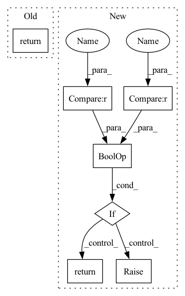

Pattern ID :24597
Before Change
def compute_spearmanr_metrics(p: EvalPrediction):
print(p.label_ids.shape, p.predictions.shape)
return {
"spearmanr": spearmanr(p.label_ids, p.predictions)
}
After Change
def compute_spearmanr_metrics(task_name, preds, labels):
// print(p.label_ids.shape, p.predictions.shape)
if task_name == "fluorescence" or task_name == "stability" :
return {
"spearmanr": spearmanr(labels, preds)
}
else:
raise KeyError(task_name)
def simple_accuracy(preds, labels):In pattern: SUPERPATTERN
Frequency: 5
Non-data size: 7
Instances Fragment ID: 76353989
Project Name: zjunlp/ontoprotein
Commit Name: 74e46a8a86bce07c089f29c0ac7c55a76e1f5230
Time: 2022-06-07
Author: 50662014+cheng-siyuan@users.noreply.github.com
File Name: src/benchmark/metrics.py
M Class Name: AnonimousClass
N Class Name: AnonimousClass
M Method Name: compute_spearmanr_metrics(3)
N Method Name: compute_spearmanr_metrics(1)
M Parent Class:
N Parent Class:
M File Name: src/benchmark/metrics.py
N File Name: src/benchmark/metrics.py
M Start Line: 35
M End Line: 39
N Start Line: 38
N End Line: 47
Before Change
def compute_spearmanr_metrics(p: EvalPrediction):
print(p.label_ids.shape, p.predictions.shape)
return {
"spearmanr": spearmanr(p.label_ids, p.predictions)
}
After Change
def compute_spearmanr_metrics(task_name, preds, labels):
// print(p.label_ids.shape, p.predictions.shape)
if task_name == "fluorescence" or task_name == "stability" :
return {
"spearmanr": spearmanr(labels, preds)
}
else:
raise KeyError(task_name)
def simple_accuracy(preds, labels): Fragment ID: 76353977
Project Name: zjunlp/ontoprotein
Commit Name: 74e46a8a86bce07c089f29c0ac7c55a76e1f5230
Time: 2022-06-07
Author: 50662014+cheng-siyuan@users.noreply.github.com
File Name: src/benchmark/metrics.py
M Class Name: AnonimousClass
N Class Name: AnonimousClass
M Method Name: compute_spearmanr_metrics(3)
N Method Name: compute_spearmanr_metrics(1)
M Parent Class:
N Parent Class:
M File Name: src/benchmark/metrics.py
N File Name: src/benchmark/metrics.py
M Start Line: 35
M End Line: 39
N Start Line: 38
N End Line: 47
Before Change
if start_index is None and end_index is None:
logger.warning("both start_index and end_index are None, rebase is ignored")
return
if start_index < 0 or end_index < 0:
logger.warning("start_index or end_index cannot be less than 0")
returnAfter Change
storage_si = self.start_index
storage_ei = self.end_index
if storage_si is None or storage_ei is None :
raise ValueError("storage.start_index or storage.end_index is None, storage may not exist")
start_index = storage_si if start_index is None else start_index
end_index = storage_ei if end_index is None else end_index
if start_index is None or end_index is None:
logger.warning("both start_index and end_index are None, or storage does not exist; rebase is ignored")
return
if start_index < 0 or end_index < 0:
logger.warning("start_index or end_index cannot be less than 0")
return Fragment ID: 76353976
Project Name: microsoft/qlib
Commit Name: 5da33562ddae7f78439d211269232b40f5231857
Time: 2021-05-25
Author: zhu.pengrong@foxmail.com
File Name: qlib/data/storage/storage.py
M Class Name: FeatureStorage
N Class Name: FeatureStorage
M Method Name: rebase(3)
N Method Name: rebase(3)
M Parent Class: BaseStorage
N Parent Class: BaseStorage
M File Name: qlib/data/storage/storage.py
N File Name: qlib/data/storage/storage.py
M Start Line: 362
M End Line: 386
N Start Line: 416
N End Line: 446
Before Change
assert len(default) < 2
if hasattr(obj, "__slots__") and isinstance(obj, type) and is_dataclass(obj):
try:
return obj.__dataclass_fields__[field].default
except KeyError:
if default:
return default[0]After Change
):
try:
_field = obj.__dataclass_fields__[field]
if _field.default_factory is not MISSING or _field.default is MISSING :
raise AttributeError
return _field.default
except (KeyError, AttributeError):
if default: Fragment ID: 76353973
Project Name: mit-ll-responsible-ai/hydra-zen
Commit Name: d40158c18880f7cbb31df12a94be136bc373885b
Time: 2022-12-22
Author: rsoklaski@gmail.com
File Name: src/hydra_zen/structured_configs/_type_guards.py
M Class Name: AnonimousClass
N Class Name: AnonimousClass
M Method Name: safe_getattr(2)
N Method Name: safe_getattr(2)
M Parent Class:
N Parent Class:
M File Name: src/hydra_zen/structured_configs/_type_guards.py
N File Name: src/hydra_zen/structured_configs/_type_guards.py
M Start Line: 46
M End Line: 56
N Start Line: 50
N End Line: 67
Before Change
// target = ops.convert_to_tensor(targets, name="target")
// with tf.name_scope(name):
return tf.reduce_mean(
tf.reduce_sum(
-(target * tf.math.log(output + epsilon) + (1. - target) * tf.math.log(1. - output + epsilon)), axis=1
), name=nameAfter Change
if False in tf.less_equal(output, [1.0]).numpy() or False in tf.greater_equal(output, [0.0]).numpy() :
raise Exception("all elements of input should be between 0 and 1")
epsilon = 3.6e-44
cal_loss = -(target * tf.math.log(output + epsilon) + (1. - target) * tf.math.log(1. - output + epsilon))
if reduction == "mean":
return tf.reduce_mean(cal_loss)
elif reduction == "sum":
return tf.reduce_sum(cal_loss)
elif reduction == "none":
return cal_loss
else:
raise Exception("The reduction values are "mean", "sum", and "none".")
def mean_squared_error(output, target, reduction="mean"): Fragment ID: 76353988
Project Name: tensorlayer/tensorlayerx
Commit Name: 21bf2328ccadff5a24520c774d17bfd6d5e05fa4
Time: 2022-01-26
Author: laicheng_vip@163.com
File Name: tensorlayerx/losses/tensorflow_cost.py
M Class Name: AnonimousClass
N Class Name: AnonimousClass
M Method Name: binary_cross_entropy(3)
N Method Name: binary_cross_entropy(4)
M Parent Class:
N Parent Class:
M File Name: tensorlayerx/losses/tensorflow_cost.py
N File Name: tensorlayerx/losses/tensorflow_cost.py
M Start Line: 83
M End Line: 116
N Start Line: 126
N End Line: 140
Before Change
if isinstance(value, dict):
self._storage_dtype = "struct"
return value
def decode_example(self, value):
Decode example audio file into audio data.After Change
buffer = BytesIO()
sf.write(buffer, value["array"], value["sampling_rate"])
return {"bytes": buffer.getvalue(), "path": value.get("path")}
elif value.get("bytes") is not None or value.get("path") is not None :
return {"bytes": value.get("bytes"), "path": value.get("path")}
else:
raise ValueError(
f"An audio sample should have one of "path" or "bytes" but they are missing or None in {value}."
)
Fragment ID: 76353972
Project Name: huggingface/datasets
Commit Name: 6ca96c707502e0689f9b58d94f46d871fa5a3c9c
Time: 2022-01-21
Author: 42851186+lhoestq@users.noreply.github.com
File Name: src/datasets/features/audio.py
M Class Name: Audio
N Class Name: Audio
M Method Name: encode_example(2)
N Method Name: encode_example(2)
M Parent Class:
N Parent Class:
M File Name: src/datasets/features/audio.py
N File Name: src/datasets/features/audio.py
M Start Line: 43
M End Line: 54
N Start Line: 49
N End Line: 75